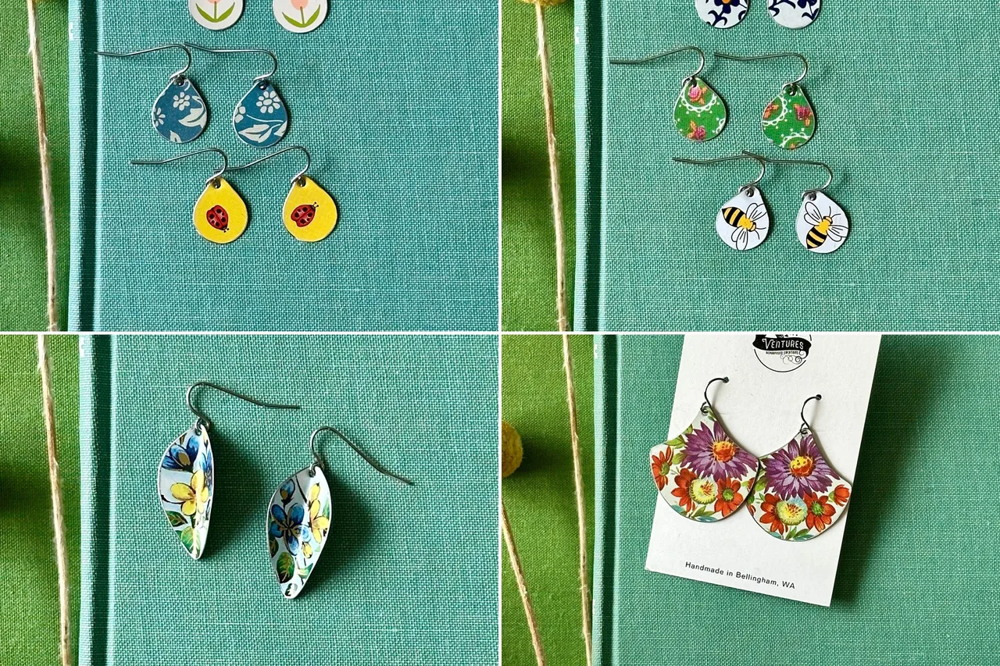
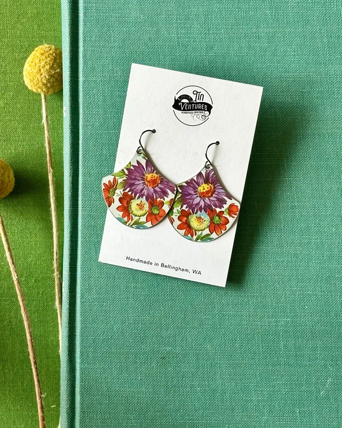
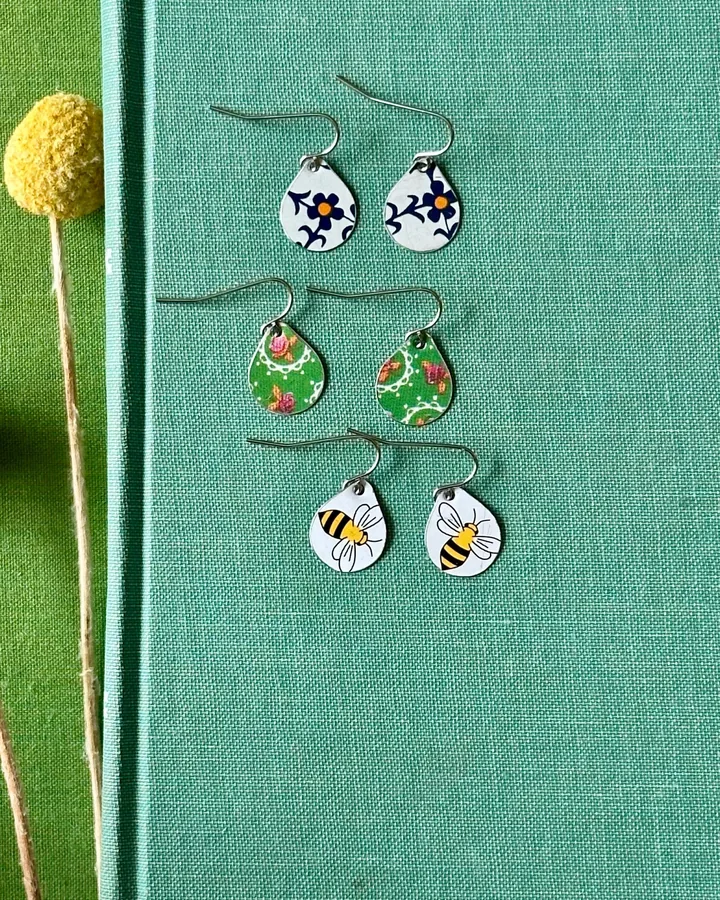
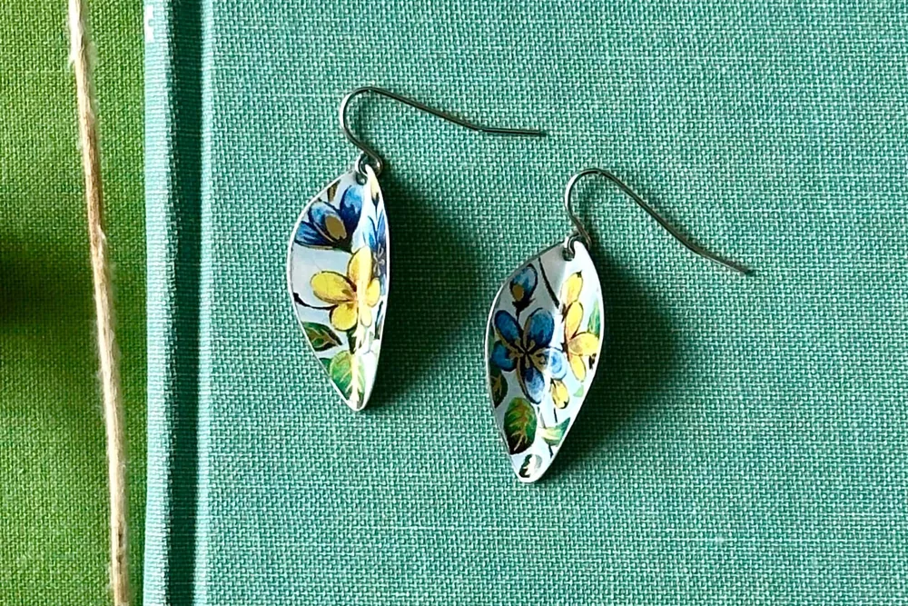
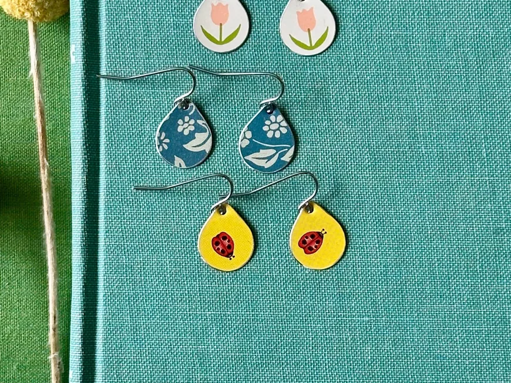
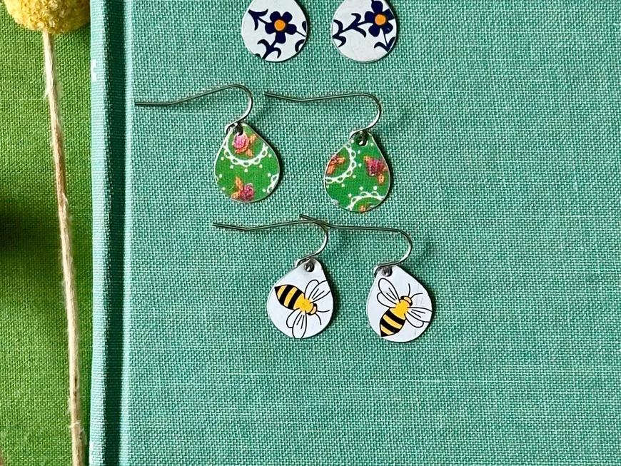
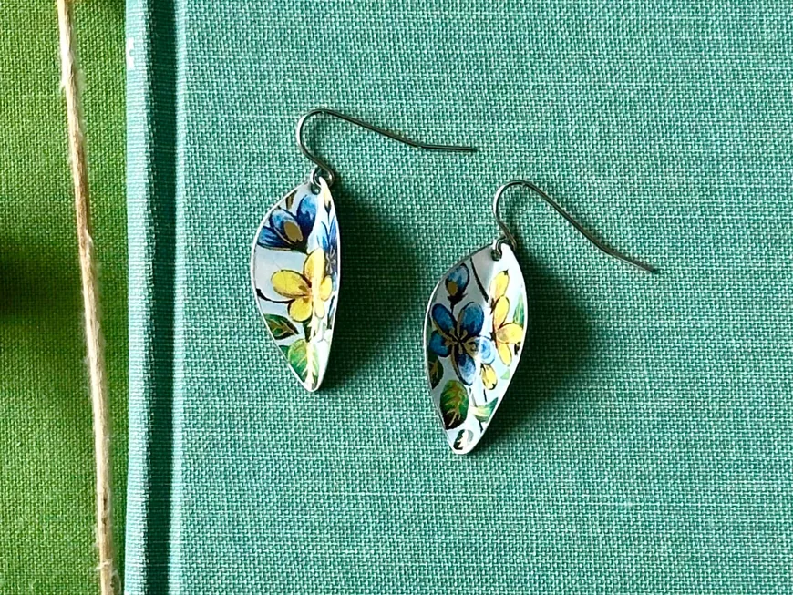
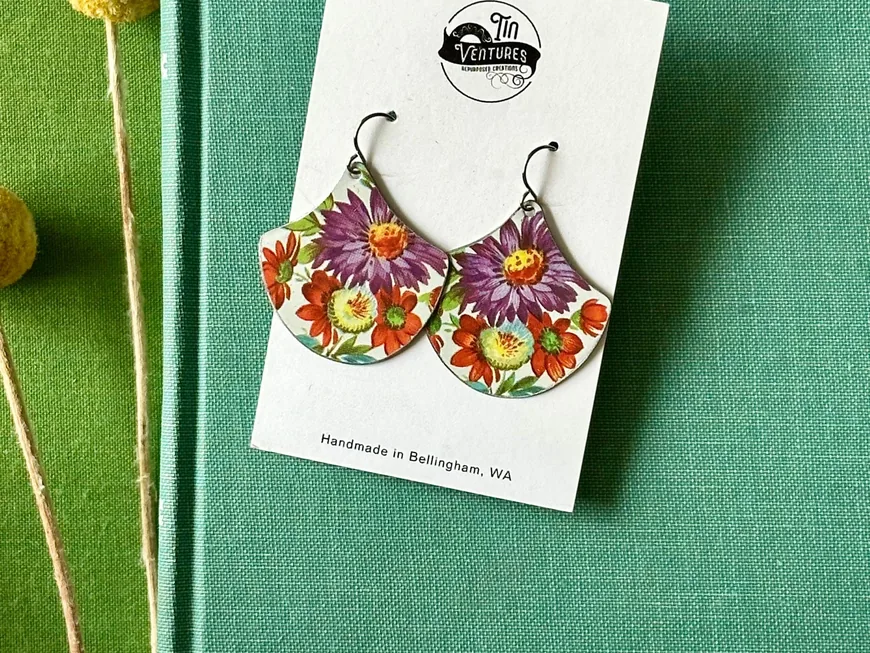

Repurposed
Made from vintage tins.

Repurposed tin jewelry · Washington
Handmade, repurposed creations made from vintage tins.

Meet the Artist
Owner & artist of TinVentures
Handmade, repurposed creations made from vintage tins.
Vintage tin earrings, plus a little retail space open by appointment.
Our story

01 How it started
TinVentures turns vintage tins into handmade, repurposed creations. Each pair of earrings is cut from a real tin, so the colors and patterns come straight from its original print.
Strawberry tins, floral tins, even an old Singer sewing tin: every design keeps a little of the tin’s history.
Customers love that the pieces are upcycled, neatly cut with no rough edges, and packaged with care.
— Sydney
02 Where & how it’s made
Sydney picks a vintage tin, cuts out the prettiest parts of its print, smooths every edge and turns each piece into lightweight earrings.

03 What makes it special
Made from vintage tins.
Cut and finished by hand.
Every tin is a little different.
Reviews
What we make
Mini tin earrings, floral drops and bright statement pairs. Here is what you will find in the shop.

Tiny drops cut from vintage tins.

Florals, fruit and bright prints.

Blue and yellow vintage florals.

Bold orange and purple blooms.
Everything is sold through the online shop, with secure checkout and buyer protection.
Stay in the loop
Sign up to be the first to know about sales and new products.
You’re in! 🎉
Continue to the shopMade in Washington. Follow along on Instagram for new tins and new pairs!
Visit the shop